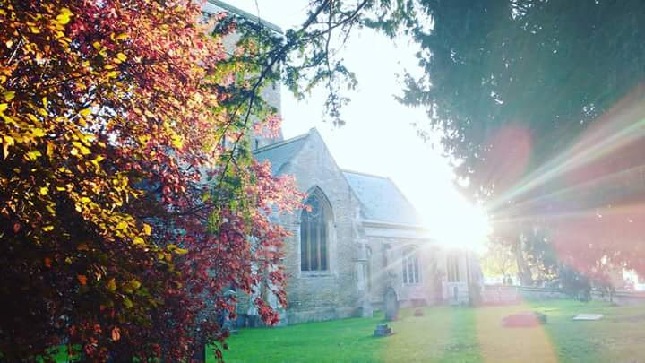

Sunday Worship
St. Helen’s Church is in the Howden Deanery, Diocese of York, which is part of the Church of England and serves the villages of Melton and Welton, located in the East Riding of Yorkshire.

We would love to welcome you to join us at St Helen’s Church, both for the fellowship of being part of a Christian Community and for the gift of deepening your relationship with God, through Jesus Christ. As a village church, St Helen’s has a variety of forms of worship on a Sunday, to help us cater for all people. Please come along and try the different services.
At 8:00 AM on 1st and 3rd Sundays of the month, we have Holy Communion, this is a ‘said’ (i.e. not sung) service using traditional language from the Book of Common Prayer. In engaging with this worship, we join in with a tradition going all the way back to the Archbishop Thomas Cranmer in the 16th century. There is a poetry to the old English language, the intimate use of ‘thee’ and ‘thou’, which many people find helps them to inhabit a reverential space while listening to, and praying to, God.
At 10:15am we have our most popular service, in which the format is varied from week to week throughout the month. The choir always sings at this service, which many find a great help in worshipping God.
- Our primary style of service is the ‘Parish Eucharist’, which is a traditional phrase to describe the church coming together in thanksgiving. The choir sings, we read the Bible, affirm our faith, pray and share Holy Communion together.
- We also have a service we call ‘All-Age Eucharist’, which essentially means we’re trying to hold together reverent worship with a more relaxed style and content.
- Once a month we have a service called ‘Matins’: this is a traditional worship service which is expressed in choral singing, led by the choir.
- For the younger members of our congregation, we run ‘Children’s Church’ during services – (except when we have an All-Age service).
After the main 10:15am service, many of the congregation stay for tea, coffee, cold drinks, biscuits and sometimes cake.
All of these styles of Sunday worship help the people of God find new perspectives in their relationship with each other and with Jesus, and because the pattern of worship is varied our praise of God is both refreshed and refreshing.
At 3:30pm on the third Sunday we have Messy Church, with refreshments from 3:15pm.
To find out what is happening check this web site regularly, or better still, come along and worship with us.